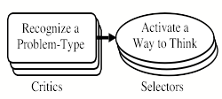
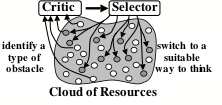
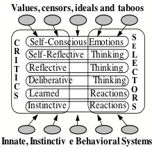
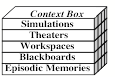
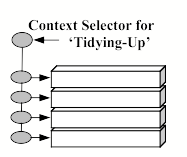

This is a draft (July 28, 2005) of Chapter VII of The Emotion Machine by Marvin Minsky. Do not distribute, because it will change, but please send comments to minsky@media.mit.edu.
PART VII. Thinking........................................................................... 1
§7-1. What selects the subjects we think about?.................................. 3
§7-2. Emotional Thinking.................................................................... 4
§7-3. The Critic-Selector Model of Mind............................................ 5
§7-4. What are some useful “Ways to Think?”.................................... 7
§7-5. What are some useful Critics?.................................................... 8
§7-6 Emotional Embodiment.............................................................. 10
§7-7. Poincare’s Unconscious Process............................................. 12
Do we normally think 'Bipolarly'?................................................ 15
§7-8. Cognitive Contexts................................................................... 15
How many thoughts can you think at once?................................. 18
What Controls the Persistence of Processes?............................... 19
QUESTIONS..................................................................................... 20
“I am aware of a constant play of furtherances and hindrances in my thinking, of checks and releases, tendencies which run with desire, and tendencies which run the other way … welcoming or opposing, appropriating or disowning, striving with or against, saying yes or no.” — William James, [Principles of Psychology]
Which characteristics help us to surpass all the rest of our animal relatives? Surely our most outstanding such trait is our knack for inventing new Ways to Think.
Romanticist: You claim that our finest distinction is thinking—yet perhaps we are even more unique in our richness of how we experience things. There’s the joy of turning one’s intellect off, to enjoy a sunset or listen to birds, or to sing or do a spontaneous dance in delight of the sense of being alive.
Determinist: People use words like ‘spontaneous’ to make themselves feel that they aren’t constrained. But perhaps that sense of enjoying ourselves is merely a trick that some parts of our brains use to make us do what they want us to do.
In any case, I doubt that we ever stop thinking entirely, because thinking refers, at different times, to a huge range of intricate processes.
Citizen: If our everyday thinking is so complex, then why does it seem so straightforward to us? If its machinery is so intricate, how could we be unaware of this?
That illusion of simplicity comes from forgetting our infancies, in which we grew those abilities. As children we learned how to pick up blocks and arrange them into rows and stacks. Then as each new group of skills matured, we built yet more resources on top—just as we learned to plan and build more elaborate arches and towers.
Along with this, in those early times, we assembled the towers of aptitudes that we describe with words like minds. But now, as adults, we all believe that we have always been able to think—because we learned those skills so long ago that we cannot recall having learned them at all.
It took each of us many years of hard work to develop our more mature ways to think—but whatever records remain of this have somehow become inaccessible. What could have made us all victims to that “amnesia of infancy?” I don’t think this is simply because we ‘forgot.’ Instead, I suspect that it’s largely because we kept developing new, better techniques for representing both physical and mental events—and some of these methods became so effective that we abandoned the use of our previous ones. Now, even if those old records still exist, we no longer can make any sense of them.
In any case, the result of this is that now we all think without knowing how we think—and we do it so fluently that we scarcely ever ask about what thinking it is and how it might work. In particular, we like to celebrate grand accomplishments in the sciences, arts, and humanities—but we rarely applaud—or ask questions about—the marvels of everyday, commonsense thought. Indeed, we often see thinking as more or less passive, as though our thoughts just “come to us” and we say things like, "It occurred to me" or ”A thought entered my mind,” instead of, “I just made a new idea.” Thus we talk as though we don’t deserve any credit for our ideas, and we scarcely ever wonder about what chooses which subjects we think about.
One of the wooden doors in my home bears scratches made more than a decade ago. Our dog Jenny is gone but the scratches remain. I notice them only a few times a year, though I pass by that door several times every day.
Every day you encounter great numbers of things, yet only a few of them ‘get your attention’ enough to make you ask questions like, “What is that object and why is it here,” or “Who or what caused that to happen? Most times your thinking proceeds in a smooth, steady flow in which you scarcely ever reflect on how you get from each step to the next.
At yet other times, your mind seems to wander without any sense of direction at all. First you might dwell on some social affair, then you reflect on some past event; next you’re beset by a hunger pang, or the thought of a payment that’s overdue, or an impulse to fix the faucet-drip, or an urge to tell Charles how you feel about Joan. Each item reminds you of something else until some mental ‘Critic’ cuts in with, “This isn’t getting you anywhere,” or “You must try to get more organized.”
However, there are certain times when your thinking is much more aim and direction. This happens when you are pursuing a certain goal, but encounter an impasse or obstacle like, “I can’t pack all this into this box—and besides, that would make it too heavy to lift.” Then you may stop to deliberate: “It looks like this will take several trips, but I don’t want to spend that much time on this.” Much of this chapter will discuss the idea that such recognitions of obstacles play critical roles in controlling our higher levels of thinking.
∞∞∞∞∞∞∞∞∞∞∞∞∞∞∞∞∞∞∞
This chapter will develop the idea that each person has many different ways to think. One could ask why we have so many of those, and one answer would be that our ancestors lived through a host of varied environments, each of which required ways to deal with different conditions and constraints. Then, because we never discovered one uniform scheme that could meet all our needs, we retained large parts of that collection of methods for coping with different situations.
Generally, we do not seem to be much aware of switching among all those ways to think. Perhaps this in large part because we all have that sense of having (or being) a Single Self—so one rarely asks a question like, “What prevents any part of my mind from seizing control of all the rest?” (Such accidents must have happened to many individuals in the course of human history—but their genes failed to propagate because they lacked enough versatility.) The result was that, over eons of time, our brains evolved a good many different ways to avoid the most common kinds of mistakes, while still staying able to adapt to a series of new environment; this is how evolution works; each species evolve at the edge of some zone between the safeties they know and the dangers they don’t.
Psychiatrist: That safety-zone can be narrow indeed. Most of the time, most minds function well, but sometimes get into various states in which they can scarcely function at all—and then we say that they’re mentally ill.
Physiologist: Surely most such disorders have medical causes—such as traumatic injuries, or chemical imbalances, or diseases that damage our synapses.
Programmer: Perhaps, but we should not assume that all such disorders have non-mental causes. When a ‘software virus’ infects a computer and changes some data on which it programs depends, the hardware is not damaged at all, but still there are serious changes in how it behaves.
Similarly, a new destructive goal or idea—or a change in one’s Critics or Ways to Think—could gain control of so much of a person’s resources and time that it could affect multiple realms of knowledge and thought—and thus spread like a mental malignancy.
Sociologist: Perhaps it’s the same on a larger scale, when the notions of a sect or cult include ways to discern potential recruits, in whom its ideas and belief will propagate.
∞∞∞∞∞∞∞∞∞∞∞∞∞∞∞∞∞∞∞
What selects what we’ll think about next, from among all our various interests—and how long will we persist with each? Let’s consider a typical, everyday incident:
Joan needs to write a project report, but has not made much progress on it. Discouraged, she sets those thoughts aside and finds herself roaming about her house with no particular goal. She passes an untidy stack of books, and stops for a moment to straighten them out. But then she ‘gets’ a new idea, so she goes to her desk to type a note. She starts to type—but finds that the ‘T’ on her keyboard is stuck. She knows how to fix this, but worries that, then, she might forget that new idea—so, instead, she makes a handwritten note.
What led Joan to notice that pile of books? Why did that that idea ‘occur’ to her now, instead of at some other time? Let’s look more closely at these events.
Joan has not made much progress. Some mental ‘Critic’ must have noticed this and suggested that she ‘take a break.’
Discouraged, Joan sets those thoughts aside. When and how will she bring them back? That will depend on the extent to which she can later find records of them. Section §7-9 will ask about how we remember the contexts of our recent thoughts.
Joan is roaming without any goal. Or so it may seem—but most animals have instincts to maintain their ‘territories’ or nests. Joan usually walks right past that spot without giving it a second thought—but perhaps right now she is ‘making rounds’ because she is mainly controlled by Critics that aim to maintain the tidiness of her home.
She passes an untidy stack of books, and stops for a moment to straighten them out. Why doesn’t Joan stop now to read those books, instead of just trying to tidy them up? Perhaps this is because the Critics that are most active now represents those books as untidy objects (rather than as containers of knowledge)—so she’s more concerned with how they look than with the subjects that they are about.
But then she ‘gets’ a new idea. When people say, “It occurred to me,” this show how limited is the extent to which we can reflect on how we produce our ideas.
Joan goes to her desk to type a note. Joan knows that when she “gets” an idea, she cannot depend on remembering it—and so she puts her housekeeping on hold to make a more permanent record.
She finds that the ‘T’ on her keyboard is stuck. She knows how to fix this, but worries that then she might forget that new idea. She is using her self-reflective knowledge about the qualities of her short-term memories.
Perhaps most of the time, we mainly react to things that happen, without much sense of making decisions. However, our higher-level thinking is much affected by our wishes, fears, and larger-scale plans—as well as by other aspects of the context we’re in. This raises many questions about how we spend our mental time:
What schedules our large-scale plans?
What reminds us of things that we promised to do?
How do we choose among conflicting goals?
What decides when we should quit or persist?
Any good model of commonsense thinking should suggest some answers to questions like these. However, so long as everything goes well, your thoughts seem to proceed in a steady, smooth flow. Each minor obstacle makes only small changes in how you think, and if you ‘notice’ these at all, they merely appear as transient feelings or as fleeting ideas. However, when more serious obstacles persist and keep you from making progress, then, various Critics intervene to make larger changes in how you think.
There is a very fine line between "hobby" and "mental illness."—Dave Barry
Most of the time your thinking proceeds in routine, uneventful streams—but sometimes you run into obstacles that interrupt your orderly progress. Then you’ll have to find something else to do, and this may lead to a spreading cascade changes in the way you think.
Changing the subject. Whatever you are doing now, there are always other things you could do, so whenever you get discouraged with one, you might want to switch to another.
Self-Determination. If you are tempted to abandon your task, you can renew your motivation by bribing yourself with imagined rewards, or with threats of the prospect of failure
Self-Conscious Reflection. If that doesn’t work, you might start to imagine how you (or your imprimers) would feel if your performance conflicted with your ideals.
But when none of those methods turns out to help, one still can use several ‘last resorts.’
Self-Regression: When your situation seems to become so complex that you see no way to deal with it, you still can ask yourself, “How did I deal with such things in the past?” Then you may be able to ‘regress’ to some earlier version of yourself, from an age when such things seemed simpler to you.
Cry for Help! If you can’t find a way to do something yourself, you might attempt to exploit the resources of your friends. As infants, we were designed to do this, using signals that hijack more powerful minds.
Emotional thinking: A flash of impatience or anger can cut through what seems like a hopelessly tangled knot. Each such ‘emotional way to think' is a different way to deal with things, and some can increase your persistence or courage, while others can help you simplify things.
In any case, after each such change, you may still want to pursue some similar goals, but now you’ll see them from new points of view— because each switch to a new Way to Think may initiate a large-scale cascade. Then, depending on how long those changes persist, you (or your friends) might recognize this as a change in your emotional state.
Various parts of our states of mind can continue for different scales of time. Some last for no more than the blink of an eye, but infatuations persist for days or weeks. However, when other ‘dispositions’ endure for substantial spans of a individual’s life, we see as aspects of that person’s personality,’ and we call these characteristics or traits.
For example, when solving a problem, some people tend to accept a solution that still has some deficiencies—so long as it seems to work well enough: you might describe such a person as realistic, pragmatic, or practical. Another person may tend to insist that every potential flaw must be fixed—and you might call such people fastidious—except when they make you uncomfortable, in which case you call them obsessive instead. Other such dispositions include being Cautious vs. Reckless, Inattentive vs. Vigilant, Unfriendly vs. Amicable, Reclusive vs. Sociable, Visionary vs. Down-to-Earth, or Courageous vs. Cowardly.
In fact, in the course of everyday thought, each person is likely to frequently switch among such views or attitudes, and we usually don’t even notice this. However, when we encounter more serious trouble, our Critics may make enough changes to start the large-scale cascades that we describe in terms of emotional states.
Psychiatrist: What would happen if too many Critics were active? Then your emotions would keep changing too quickly. And if those Critics stopped working at all, then you’d get stuck in just one of those states.
Perhaps we can see an example of this in Antonio R. Damasio’s book, Descartes’ Error, [1] which describes a patient named Elliot, who had lost some parts of his frontal lobes in the course of removing a tumor. After that treatment, he still seemed intelligent—but his friends and employers had the sense that Elliott was ‘no longer himself.’ For example, if asked to sort some documents, he was likely to spend an entire day at carefully reading just one of those papers—or at trying to decide whether to classify them by name—or by subject or size or date or by weight.
Damasio: “One might say that the particular step of the task at which Elliot balked was actually being carried out too well, and at the expense of the overall purpose. … True, he was still physically capable and most of his mental capacities were intact. But his ability to reach decisions was impaired, as was his ability to make an effective plan for the hours ahead of him, let alone to plan for the months and years of his future.”
The damaged parts of Elliot’s brain included certain connections (to the amygdala) that are widely believed to be involved with how we control our emotions.
Damasio: “At first glance, there was nothing out of the ordinary about Elliot's emotions. … However, something was missing. … He was not inhibiting the expression of internal emotional resonance or hushing inner turmoil. He simply did not have any turmoil to hush. … I never saw a tinge of emotion in my many hours of conversation with him: no sadness, no impatience, and no frustration with my incessant and repetitious questioning.”
This led Damasio to suggest that “reduced emotion and feeling might play a role in Elliot's decision–making failures.” However, we could also consider this opposite view: that it was Elliot's new inability to make such decisions that reduced his range of emotions and feelings. For, perhaps the damage in Elliott's brain was mainly to some of the Critics (or to their connections) that formerly set off the large-scale cascades that we recognize as emotional states. Then he would have lost those precious cascades—and hence, the emotions that he once displayed—because he could no longer could exploit those Critics to choose which emotional states to use.
∞∞∞∞∞∞∞∞∞∞∞∞∞∞∞∞∞∞∞
I have yet to see any problem, however complicated, which, when you looked at it in the right way, did not become still more complicated. —Poul Anderson
No problem is so formidable that you can't walk away from it. —Charles Schulz
We frequently change what we’re thinking about, without noticing that we are doing this—because it is mainly when some trouble comes that we start to reflect about thinking itself. Thus, we don’t recognize a problem as ‘hard’ until we’ve spent some time on it without making any significant progress. Even then, if that problem does not seem important, you might just abandon that line of thought and simply turn to some other subject.
However, if you have an important goal, then it is useful to notice that you are stuck—and it will be even more useful if you also can recognize that you’re being blocked by a certain particular type of barrier, obstacle, impasse, or snag. For if you are able to diagnose the particular “Type of Problem” you face, then that knowledge can help you to switch to a more appropriate “Way to Think.”
This suggests a Model of Mind based on reacting to ‘cognitive obstacles.’ We’ll call this the Critic-Selector model:

On the left are resources that we shall call Critics, each of which can recognize a certain species of “Problem-Type.” When a Critic sees enough evidence that you now are facing its type of problem, then that Critic will try to activate a “Way to Think” that may be useful in this situation.

For example, a Critic-Selector model could embody a set of ‘rules’ like these:
If a problem seems familiar, try reasoning by Analogy.
If it seems unfamiliar, change how
you’re describing it.
If it still seems too difficult,
divide it into several parts.
If it seems too complex, replace
it by a simpler one.
If no other method works, ask
another person for help.
Every person accumulates a collection of different “Ways to Think” because, as we’ve repeated many times, no single method or mental technique can solve every kind of problem-type; however, if we have enough of them then, whenever the one we’re using fails, we’ll be able to switch to a different one.
However, there is a problem that is sure to arise in any system based on If-Then rules: what if more than one Critic or “If” is aroused? [2] Then we might decide which one to use by adopting some policy like these:
Choose the Critic with the highest priority. [Ref: GPS]
Choose
the one that is most strongly aroused. [Ref. Pandemonium]
Choose the one that gives the most specific advice. [Ref. Raphael]
Have them all compete in some ‘marketplace.’ [See §9-X]
Simple strategies like these will work in simple cases, but will fail in more complex situations. Then we’ll need higher-level Critics that recognize and suggest ways to change our bad selections of low-level Critics:
If too many Critics are aroused, then describe the problem in more detail.
If
too few Critics are aroused, then
make the description more abstract.
If important resources conflict, then try to discover a cause for this.
If there has been a series of failures, then switch to a different set of Critics.
Sometimes we recognize, after the fact, that our selections may have been incorrect, and that we may need to edit our collection of Critics:
I selected a hard-to-use method, but realized that I knew a simpler yet better one.
I now see that the action I took had a bad, irreversible side effect.
I regarded that as an obstacle, but now I see that it was valuable.
Although that method caused some trouble, I learned a lot from using it.
To recognize those kinds of events would require Critics that work at higher levels—and all this suggests that our model of mind should include Selectors and Critics at every level. [3]

The following sections will discuss some of our many Ways to Think, and some of the Critics we use to recognize various ways in which we get stuck.
∞∞∞∞∞∞∞∞∞∞∞∞∞∞∞∞∞∞∞
“When you want people to think you are brilliant, just imagine the worst thing that you could do and then do precisely the opposite.” —Naomi Judd. [get her permission]
It is mainly when we get into trouble that we engage the processes that we call thinking or reasoning. However, ‘thinking’ is no single, definite thing; instead, we use different ‘Ways to Think’ for dealing with different types of obstacles. It ought to be one of our central goals—both for AI and for Psychology—to classify our Ways to Think. However, we don’t yet have systematic ways to classify those abilities—so I’ll just list some examples of them.
Knowing How: The best way to solve a problem is to know how to solve it and use that solution. However, we may not know how to retrieve what we know, or even know that we know it.
Extensive Search. When one knows no better alternative, one could search through all possible chains of actions—but this is usually impractical because that search grows exponentially.
Reasoning by Analogy: When a problem reminds you of one that you solved in the past, you may be able to adapt that case to the present situation—if you have good ways to tell which similarities are most relevant.
Divide and Conquer. If you can’t solve a problem all at once, then break it down into smaller parts. For example, every difference we recognize may suggest a separate sub-problem to solve.
Planning. Consider the set of sub-goals you want to achieve and examine how they affect each other. Then, with those constraints in mind, propose an efficient sequence for achieving them.
Simplification. Sometimes, a good way to make a plan is to make a simplified problem by ignoring some aspects of the original one. Then any solution to the simplified one may serve as a sequence of stepping-stones for solving the initial problem.
Elevation. If you are bogged down in too many details, describe the situation in more general terms. But if your description seems too vague, switch to one that is more concrete.
Reformulation. Find a different representation that highlights more relevant information. We often do this by making a verbal description—and then ‘understanding’ it in some different way!
Self-reflection. Instead of pursuing a problem itself, ask what makes that problem seem hard, or what you might be doing wrong. This can lead to better ways to represent the problem.
Contradiction. Try to prove that your problem cannot be solved, and then look for a flaw in that argument.
Use external representations: If you find that you’re losing track of details, you can resort to keeping records and notes, or drawing suitable diagrams.
Simulation. One can avoid taking physical risks if one can predict “what would happen if” by imagining possible actions inside the mental models that one has built.
Correlation. When certain events seem to happen together, try to find ways in which they may be connected.
Logical Reasoning. We sometimes make ‘logical chains of deductions,’ but those conclusions may be wrong because of exceptions to our assumptions.[4]
Wishful thinking. Imagine having unlimited time and all the resources that you might want. If you still can’t envision solving the problem, then you should reformulate it.
Impersonation. When your own ideas seem inadequate, imagine someone better at this, and try to do what that person would do.
Cry for help. You can always resort to other techniques that most people would call “emotional.”
Resignation. Whenever you find yourself totally stuck, you can shut down the resources you’re using now and relax, lay back, drop out, and stop. Then the ‘Rest of Your Mind’ may find an alternative—or conclude that you don’t have to do this at all.
How do we choose which of these to use? The Critic-Selector model suggests that each person can recognize particular ways in which one gets stuck—and can use each such diagnosis to select one or more particular ways to deal with that kind of predicament. We each do this in different ways, and the Critics that we each develop must be among our most precious resources.
∞∞∞∞∞∞∞∞∞∞∞∞∞∞∞∞∞∞∞
“Don't pay any attention to the critics. Don’t even ignore them.”—Samuel Goldwyn
We are always developing new ways to think—so we also need to make Critics to help to select when to use each of those techniques—by recognizing which kinds of problem we face. This means that our Critics must serve as ways to classify all the barriers, obstacles, impasses, or snags that make our problems hard to solve. Indeed, it would be an important goal, both for people and for computing machines, to have a systematic catalog of the types of problems we most frequently face. [5] However, we do not yet have adequate, orderly ways to do this—so here we’ll merely try to describe a few types of Critics that people seem to use.
Innate Reactions and built-in Alarms. Many types of external events arouse detectors that make us quickly react, as when an object is quickly approaching you, a light is too bright, you touch something hot, or hear a loud sound. We’re also born with ways to detect abnormal conditions inside our skins—such as wrong levels of chemicals in the blood. Many of these have built-in connections that make us react to correct those conditions, in ways that work so automatically that we react to them without any thought.
However, an unexpected touch, sight, or smell—or a sense of hunger, fatigue, or pain—does interrupt the flow of our thoughts. Indeed we’d never survive through our infancies unless such emergencies (or opportunities) could pull us away from our reveries. We can sometimes suppress some of those alarms; for example, when we suppress a sneeze, or stop ourselves from scratching an itch. But if you try to hold your breath, you can’t resist the alarm of asphyxia—and it is hard to ignore a baby’s cry, a constantly ringing telephone, or an amorous opportunity.
Learned Reactive Critics. An infant will cry when it is exposed to high levels of noise—thus summoning a parent to help. However, later we learn other ways to react, such as moving to a quieter place. And eventually we learn to ‘figure out’ ways to deal with more difficult obstacles—by using higher levels of what we call ‘deliberative’ thinking and then it would seem to make more sense to think of these as involving our Critics.
Deliberative Critics. Whenever your reasoning gets into trouble, you need ways to get around obstacles. Here are some tricks we can use for this:
Action A did not do what I expected. (Try a different Way to Predict.)
Something I did had bad side effects. (Try to undo some previous choice.)
Achieving goal A made goal B harder. (Try them in the opposite order.)
I need additional information. (Search for another relationship.)
Reflective Critics. [6] When you try to solve problems by trial and error, you need critics as ‘diagnosticians’ to either verify that you’re making progress or to suggest a better way to proceed.
I’ve made many attempts with no success. (Select a better way to think.)
I’ve repeated the same thing several times. (Some ‘mental manager’ is incompetent.)
Achieving a subgoal did not attain its ‘parent’ goal. (Find another way to subdivide the problem.)
This conclusion needs more evidence. (Propose a better experiment.)
Self-Reflective Critics. When your reflections fail to help, then you may start to criticize yourself:
I have been too indecisive. (Try a method that worked on a similar problem.)
I missed a good opportunity. (Switch to a different set of Critics.)
I yield to too many distractions. (Try to exercise more Self-Control.)
I don’t have all the knowledge I need. (Find a good book or go back to school.)
Self-Conscious Critics. Some assessments may even affect one’s current image of oneself, and this can affect one’s overall state:
None of my goals seem valuable. (Depression.)
I’m losing track of what I am doing. (Confusion.)
I
can achieve any goal I like! (Mania.)
I could lose my job if I
fail at this. (Anxiety.)
Would my friends approve of this? (Insecurity.)
I should note that we often say “Critic” to mean someone who points out deficiencies, and it would be hard to describe the Correctors, Suppressors and Censors [§3-5] without using negative words like inhibit, prevent, or terminate.
However, words like positive and negative usually do not make sense by themselves; here, detecting a flaw can be and essential step toward helping one to achieve a success—for example, by keeping you from changing your goal or from wasting your time on other temptations—and thus encouraging you to persist. Frequently, the key to solving a difficult problem can lie in finding ways to make yourself ‘stick to a plan’, although it may bring some suffering before you achieve your longer-range goal.
Indeed, after we solve a difficult problem, we may wrongly credit our final success only to our very last step, and tell ourselves, “What a clever solution I’ve found!” Then, of course, it makes good sense to remember the answer to that particular question. However, it would often be better to also ask, “What kept me from finding it earlier?” For, what often makes a question seem ‘hard’ is not knowing a good way to search for the answer. This suggests that after we answer a difficult question, it may be useful to remember which strategy led to solving it by reducing the size of the search for the answer. (A good way to ‘remember’ this would be to create a new Critic to recognize that problem-type, and connect it to a Selector for that strategy.)
This subject of “Credit-Assignment” is very important because it bears on the quality of what people learn. Indeed Chapter 8 will take a further step and argue that:
What we learn can be more profound, if we assign the credit for our success, not to the final act itself—or even to the strategy that led to it—but to some even earlier choice of a process or plan that selected the winning strategy.
Generally, lower-level Critics will tend to have shorter-term effects. Thus, “Make sure that your elbow won’t topple that block,” can alter your tactics temporarily, without changing your larger-scale strategy; then even if this leads to making a mistake, you may be able to correct it and continue with your original plan. However, high-level critics can cause longer-term changes—for example, by switching you to self-reflective thoughts like, “I’m not good at solving this kind of problem. Perhaps it is time to consider a different profession.”
In any case, repeated failures can cause you to ‘brood’ about what the future might hold for you or about your social relationships, as in, “I should not get into such situations,” or “My friends will lose their respect for me,” or “I don’t have enough self-discipline.” Such thoughts can lead to the large-scale cascades that we usually call ‘emotional.’
∞∞∞∞∞∞∞∞∞∞∞∞∞∞∞∞∞∞∞
Many thinkers have maintained that emotional states are closely involved with our bodies—and that this is why we so often can recognize happiness, sadness, joy, or grief from a person’s expressions, gestures, and gaits. Indeed, some psychologists have even maintained that those bodily activities do not merely ‘express’ our emotions, but actually are what causes them:
William James: “Our natural way of thinking about ... emotions is that the mental perception of some facts excites the mental affection called the emotion, and that this latter state of mind gives rise to the bodily expression. My theory, on the contrary, is that the bodily changes follow directly the perception of the exciting fact, and that our feeling of the same changes as they occur is the emotion."
For example, James suggests that when you sense that a rival is insulting you, this makes you clench your fist and strike—and that your anger does not come first, but from you feeling of these activities. However, your annoyance with such a situation must depend on the memories that intervene to affect how we interpret those ‘exciting facts’—and then cause you to clench your fist—so it seems unlikely that those perceptions ‘directly’ lead to those actions. Nevertheless, James argues that such intermediate thoughts could not have such strong effects by themselves:
William James: If we fancy some strong emotion and then try to abstract from our consciousness of it all the feelings of its bodily symptoms we find we have nothing left behind, no “mind stuff” out of which the emotion can be constituted, and that a cold and neutral state of intellectual perception is all that remains. … [I cannot imagine] what kind of an emotion of fear would be left if the feeling neither of quickened heart beats nor of shallow breathing, neither of trembling lips nor of weakened limbs, neither of goose flesh nor of visceral stirrings, were present. ... Can one fancy the state of rage and picture no ebullition in the chest, no flushing of the face, no dilation of the nostrils, no clenching of the teeth, no impulse to vigorous action, but in their stead limp muscles, calm breathing, and a placid face.[7]
Nevertheless, I would argue all this that must begin with activities that start in your brain before your body reacts to them, to eventually lead that “impulse to vigorous action.”
Student: But then, why should your body react to them at all?
The expressions of rage that James depicts (including that clenching of teeth and flushing of face) could have served in primordial times to help to repel or intimidate the person or creature that one is angry with; indeed, any external expression of one’s mental state can affect how someone else will think. This suggest an idea about what we mean when we use our most common emotion words; they refer to classes of mental conditions that produce external signs which make our behaviors more predictable to the persons with whom we are dealing. Thus for our ancestors, those bodily signs served as useful ways to communicate such so-called ‘primary’ emotions as anger, fear, sadness, disgust, surprise, curiosity, and joy.
Student: Perhaps this could also be because our most common emotions evolved long ago when our brains were simpler. Then there were fewer levels between our goals and our sensory-motor systems.
The body and face could also serve as a simple sort of memory: those states of mind might soon fade away—except that those body-expressions could help to maintain them by sending signals back to the brain. In that respect, William James might be right: without such ‘mind-body’ feedback loops, those ‘cold and neutral’ mental states might not persist for long enough to grow into larger-scale cascades. For your external expressions of anger serve not only to frighten your enemies, but also ensure that you will stay frightened for long enough to carry out some actions that might save your life.
For example, your face might display an expression of horror—even when no one else is present—when you realize that you left the door unlocked, or forgot to turn the oven off, or that something that you believed was false. After all, you need your body to stay alive, so, given that it is always at hand, it makes sense for your brain to exploit it as a dependable external memory device.
When we are young, we find it hard to suppress those external expressions, but eventually we learn to control most of them, to at least some degree, so that our neighbors can’t always see how we feel.
Student: If those physical symptoms are not essential parts of emotions, then how can we make a distinction between our emotional states and our other ways to think?
It is hard to make that distinction clear, partly because we have so many names for our various emotional states, whereas most of our many other ways to think (such as those we described in §7–4) do not have popular names at all. Presumably this is because we don’t yet have good ways to think about them. However, here is an ancient but still useful view of what distinguishes the mental conditions that we tend to describe as emotional:
Aristotle: The emotions are all those feelings that so change men as to affect their judgments, and that are also attended by pain or pleasure. —Rhetoric, Book II.
In a modern version of this, some psychologists talk about ‘Valence,’ which refers to the extent to which one’s attitude toward some thing or situation is generally positive or negative.[8] Similarly, there is a popular view in which we think of emotion and thoughts as complementary, in much the same way that an object’s color and shape can change independently; we thus can think of each object (or idea) as having various ‘matter of fact’ or neutral aspects that, somehow, are also ‘colored’ by additional characteristics that seem to make it attractive, exciting, or desirable—versus disgusting, dull, or repulsive.
More generally, our language and thoughts are filled with distinctions like ‘positive vs. negative’ and ‘rational vs. emotional. Such pairs are so useful in every day life that it’s hard to imagine replacing them (any more than we should discard the idea that the sun rises and sets each day and night, because this is technically incorrect). However, if our goal is to understand our minds, we’ll have to outgrow many dumbbell ideas.
In particular, exaggerating the body’s role in emotions can lead to serious misconceptions. Do the talents of pianists reside in their fingers? Do artists see with talented eyes? No: there is no evidence to suggest that any of those body-parts think; it’s the brain that sits in the driver’s seat. Ask Steven Hawking or Christopher Reeve.
∞∞∞∞∞∞∞∞∞∞∞∞∞∞∞∞∞∞∞
“We cannot kindle
when we will
The fire which in our heart resides,
The spirit bloweth and is still,
In mystery our soul abides:
But tasks in hours of insight will'd,
Can be through hours of gloom fulfill'd”—Matthew Arnold
Sometimes you’ll work on a problem for hours or days, as when Joan worked on her progress report.
She has been thinking about it for several days, but has not yet conceived of a good enough plan. Discouraged, she sets those thoughts aside … but then an idea ‘occurs’ to her.
But did Joan really set those thoughts aside, or did they continue in other parts of her mind? Hear a great mathematician recount some similar experiences.
Henri Poincare: “Every day I seated myself at my worktable, stayed an hour or two, tried a great number of combinations and reached no results.” [9]
Most persons might get discouraged with this—but Poincare was inclined to persist:
“One evening, contrary to my custom, I drank black coffee and could not sleep. Ideas rose in crowds; I felt them collide until pairs interlocked, so to speak, making a stable combination. By the next morning … I had only to write out the results, which took but a few hours.”
Then he describes another event in which his thinking seemed much less deliberate:
"The changes of travel made me forget my mathematical work. Having reached Coutances, we entered an omnibus to go some place or other. At the moment when I put my foot on the step the idea came to me, without anything in my former thoughts seeming to have paved the way for it. … I went on with a conversation already commenced, but I felt a perfect certainty.”
This suggests that the work was still being pursued, hidden away in ‘the back of his mind’—until suddenly, as though ‘out of the blue,’ a good solution ‘occurred’ to him.
“There was one [obstacle] however that still held out, whose fall would involve the whole structure. But all my efforts only served at first the better to show me the difficulty. … [Some days later,] going along the street, the solution of the difficulty that had stopped me suddenly appeared to me. … I had all the elements and had only to arrange them and put them together."
In the essay from which these quotations come, Poincare concluded that when making his discoveries, he must have used activities that typically worked in four stages like these:
Preparation: Activate resources to deal with this particular type of problem.
Incubation: generate many potential solutions.
Revelation: recognize a promising one.
Evaluation: verify that it actually works.
The first and last of these stages seemed to involve the kinds of high-level processes that we characterized as conscious ones—whereas incubation and revelation usually proceed without our being aware of them. Around the start of the 19th century, both Sigmund Freud and Henri Poincare were among the first to develop ideas about ‘unconscious’ goals and processes—and, if only for mathematical activities— Poincare suggested clearer descriptions of these but borrowed
Let’s consider what might be involved in each of the stages of such a process.
Preparation: To prepare to solve a specific problem, one first may need to ‘clear one’s mind’ from other goals— for example, by taking a walk, or by finding a quiet place to work. Then one must focus on the problem by deliberating to decide which of its features are central enough to suggest an appropriate Way to Think; here Poincare said, “All my efforts only served at first the better to show me the difficulty.”
Then, he suggest, you need to find appropriate ways to represent the situation; one needs to identify the parts of a puzzle before you can start to put them together—and until you understand their relationships well enough, you will tend to waste too much of your time at making bad combinations of them. This must be what Matthew Arnold meant when he said,
“This creative power works with elements, with materials; what if it has not those materials, those elements, ready for its use? In that case it must surely wait till they are ready."—Essays in Criticism, 1865.
In other words, blind “trial and error” won’t often suffice; you need to impose the right kinds of constraints and activate a set of resources that will tend to generate good possibilities—or else get lost in an endless search. Also, if you can’t deal with the problem all at once, then you make a plan that breaks it into smaller parts that you can hope to handle separately,
Incubation: Once the ‘unconscious mind’ is prepared, it can consider large numbers of combinations, searching for ways to assemble those fragments to satisfy the required relations. Poincare wonders whether we do this with a very large but thoughtless search—or if it is done more cleverly.
Poincare: “If the sterile combinations do not even present themselves to the mind of the inventor … does it follow that the subliminal self, having divined by a delicate intuition that [only certain] combinations would be useful, has formed only these, or has it rather formed many others which were lacking in interest and have remained unconscious?"
In other words, Poincare asks how selective are our unconscious thoughts; do we explore massive number of combinations, or work on the finer details of fewer ones? In either case, when we incubate, we will need to switch off enough of our usual Critics to make sure that the system will not reject too many hypotheses. However, we still know almost nothing about how our brains could conduct such a search, nor why some people are so much better at this: here is one conjecture about that.
Aaron Sloman: "The most important discoveries in science are not discoveries of new laws or theories, but the discovery of new ranges of possibilities, about which good new theories or laws can be formed.” [10]
Revelation: When should incubation end? Poincare suggests that it continues until some structure is formed "whose elements are so harmoniously disposed that the mind can embrace their totality while realizing the details." But how does that subliminal process know when it has found a promising prospect?
Poincare: "It is not purely automatic; it is capable of discernment; it has tact, delicacy; it knows how to choose, to divine. What do I say? It knows better how to divine than the conscious self, since it succeeds where that has failed.”
He conjectures that this ability to detect promising patterns seems to involve such elements as symmetry and consistency.
Poincare: “What is it indeed that gives us the feeling of elegance in a solution, in a demonstration? It is the harmony of the diverse parts, their symmetry, their happy balance; it is all that introduces order, all that gives unity, that permits us to see clearly and to comprehend at once both the ensemble and the details.”
Poincare did not say much more about how those detectors of ‘elegance’ might work, so we need more ideas about how we recognize those signs of success. Some of those candidates could be screened with simple matching tricks. Also, as part of the Preparation phase, we select some specialized critics that can detect progress toward solving our problem, and keep these active throughout Incubation.
Evaluation: We often hear advice that suggests that it’s safer for us to trust our ‘intuitions—ideas that we get without knowing how. But Poincare went on to emphasize that one cannot always trust those ‘revelations.’
Poincare: “I have spoken of the feeling of absolute certitude accompanying the inspiration ... but often this feeling deceives us without being any the less vivid, and we only find it out when we seek to put on foot the demonstrations. I have especially noticed this fact in regard to ideas coming to me in the morning or evening in bed while in a self-hypnagogic state."
In other words, the unconscious mind can make foolish mistakes. Indeed, later Poincare goes on to argue suggest that it often fails to work out the small details—so when Revelation suggest a solution, your Evaluation may find it defective. However, if it is only partially wrong, you may not need to start over again; by using more careful deliberation, you may able to repair the incorrect part, without changing the rest of that partial solution.
I find Poincare’s scheme very plausible, but surely we also use other techniques. However, many thinkers have maintained that the process of creative thinking cannot be explained in any way, because they find it hard to believe that powerful, novel insights could result from mechanical processes—and hence require additional, magical talents. [11] However, Chapter 8 will argue that outstanding abilities can result from nothing more than fortunate combinations of certain traits that we find in the ways that most people think. If so, then what we call ‘genius’ requires no other special ingredient.
Somewhat similar models of thinking were proposed in Hadamard (1945), Koestler (1964), Miller (1960), and Newell and Simon (1972)—the latter two in more computational terms. Perhaps the most extensive study of ways to generate ideas is that of Patrick Gunkel at http://ideonomy.mit.edu. In any case, however you make each new idea, you must quickly proceed to evaluate by activating appropriate critics. Then, if the result still has some defects, you can apply similar cycles to each of those deficiencies.
In my view, what we call ‘creativity’ is not the ability to generate completely novel concepts or points of view; for a new idea to be useful to us, we must be able to combine it with the knowledge and skills we already possess—so it must not be too very different enough from the ideas we’re already familiar with.
Collaboration.
We usually think about thinking as a solitary activity that happens inside a single mind. However, some people are better at making ideas, while others excel at refining them—and wonderful things can happen when ‘matched pairs’ of such persons collaborate. It is said that T.S. Eliot’s poetry owed much to Ezra Pound’s editing, and that A.S. Sullivan’s music was most inspired when he was working with W.S. Gilbert’s librettos. Another example of such a pair might be Konrad Lorenz and Nickolaas Tinbergen, as we see in their Nobel Prize autobiographies:
Niko Tinbergen: “From the start 'pupil' and 'master' influenced each other. Konrad's extraordinary vision and enthusiasm were supplemented and fertilized by my critical sense, my inclination to think his ideas through, and my irrepressible urge to check our 'hunches' by experimentation - a gift for which he had an almost childish admiration.” [12]
Konrad Lorenz: “Our views coincided to an amazing degree but I quickly realized that he was my superior in regard to analytical thought as well as to the faculty of devising simple and telling experiments. … None of us knows who said what first, but it is highly probable that the [concept of] innate releasing mechanisms … was Tinbergen's contribution.” [13]
For many people, thinking and learning is largely a social activity—and many of the ideas in this book came from collaborations with students and friends. Some such relationships are productive because they combine different sets of aptitudes. However, there also are pairs of partners who have relatively similar skills—perhaps the most important of which are effective tricks for preventing each other from getting stuck.
∞∞∞∞∞∞∞∞∞∞∞∞∞∞∞∞∞∞∞
The processes that Poincare described involved cycles of searching and testing in which problems are solved over hours, days, or even years. However, many events of everyday thinking persist for just a few seconds or less. Perhaps these, too, begin by spawning ideas, then selecting some promising ones, and then dwelling on their deficiencies!
If so, then a typical moment of commonsense thinking might begin with a very brief ‘micro-manic’ phase. This would produce an idea or two—and then a short ‘micro-depressive’ phase would quickly look for flaws in them.
If those phases took place so rapidly that your reflective systems don’t notice them, then each such micro-cycle’ would seem to be no more than a moment of everyday thinking, while the overall process would seem to you like a steady, smooth, uneventful flow.[14]
The quality of such systems would depend in part on how much time one spends in each such phase. It seems plausible to conjecture that, when one is inclined to be ‘critical’ or ‘skeptical,’ one spends less time at Incubation and puts more effort into Evaluation. However, if anything were to go badly wrong with how those durations were controlled, then some of those phases might last for so long that (as suggested in §3-5) they might appear as symptoms of a so-called ‘manic-depressive’ disorder.
∞∞∞∞∞∞∞∞∞∞∞∞∞∞∞∞∞∞∞
No matter what you are trying to do, there will be other things trying to get your attention. Some of these can be ignored, but if some are subgoals of what you are trying to do, this may require you to switch to some other Way to Think that uses different resources and bodies of knowledge. Then, once you have accomplished those subgoals, you will need to return to your previous job—but to avoid repeating what already was done, you must have retained some information about these aspects of your previous state of mind:
Your
previous goals and priorities,
The representation you used for them,
The bodies of knowledge you had engaged,
The sets of resources that were active then,
The Selectors and Critics that were involved.
This means that our larger-scale model of mind needs places for keeping such sets of records. Let’s give these the name of “Cognitive Contexts.” Without them, every ‘train of thought’ would be disrupted whenever we were interrupted. In simpler brains, it might suffice to maintain no more than a single such memory, but for looking several steps ahead—or for managing larger subgoal trees—we’d need special machinery to enable us to rapidly switch among several remembered contexts.
More generally, because every hard problem keeps forcing us to switch among several different Ways to Think, a typical ‘present mental state’ must actually be part of a larger panalogy that can fluently navigate among several different points of view. In popular folk-psychology, we simply imagine all that stuff to be stored in our “short-term memories”— as though we could put such things into a box and take them out whenever we want.
However, we still do not know very much about how those “working’ memories operate; there is evidence that such records are stored in various different forms and locations in different parts of our brains—but we still know little about how those various brain centers actually work. So here we shall simply assume that those short-term records are stored in some place that we’ll call the “Context Box.” [15]

If you asked Joan what she was thinking about, she might mention the subject of tidying-up, and further questions would show that she is maintaining several different representations of the kinds of changes she is planning to make. Furthermore, for her to be able to switch among these, she must be able to store and retrieve various kinds of structures like these:
Her
current collection of sub-goal trees.
Some records of recent external events.
Some descriptions of recent mental acts,
Her presently active fragments of knowledge,
Simulations she uses to make her predictions.
This means that Joan’s context box for ‘tidying up’ must keep track of various aspects of that task:

Also, of course, other topics and subjects have been ‘on her mind’ for longer spans of time, so she’ll need to keep track of several of these:
Why would we need special systems like this to keep track of multiple contexts? It seems quite natural to us that after any brief interruption—for example, to answer a question that someone has asked, or to pick up a tool that you have just dropped—we can usually get back to what we were doing without needing to start all over again. It is the same when we interrupt ourselves—for example, to attend to a subgoal of a task, or briefly to think in some different way. When such a diversion is small and brief, this causes little trouble because it leaves most of our active resources unchanged.
However, a larger-scale change could cause more disruption and result in wasted time and confusion. So, as we evolved more ways to think, we also evolved machinery for more quickly returning to previous contexts. In everyday life we simply say that we’re using our ‘short-term memories’— but any good theory of how that might work must answer questions like these:
How long do recent records persist, and how do we make room for new ones? There must be more than one answer to that because various parts of the brain must work in somewhat different ways. Some memories may be permanent, while others may rapidly fade away, unless they happen to get “refreshed.” Such records also would get erased if stored in a ‘place’ that has a limited size—because then each new item would have to replace some records that are already there. Indeed, this is how modern computers work: whenever data is created or retrieved, it is first stored in a cache—a device that has been designed to be especially quickly accessible. Then, whenever such a cache gets full, its oldest records get erased—although some of them may have been copied to larger, more permanent memory boxes.
How do some memories become permanent? There is evidence that it takes hours or days for what we call short-term memories to be converted to longer-term ones. Older theories about this assumed that frequent repetitions made the original record more permanent. However, it seems more likely to me that new memories are briefly maintained in resources that act like a computer’s cache—and then, over time, more permanent versions are created in other regions of our brains. See §8-4.
In any case, some memories seem to last for the rest of one’s life. However, this could be an illusion because they might need ‘refreshment’ from time to time. Thus, when you recall a childhood memory, you often also have the sense of having remembered the same thing previously; this makes it hard for you to know whether you have retrieved an original record or merely a later copy of it. Worse yet, there now is ample evidence that those records can be changed while they’re being refreshed. [16]
How do we retrieve old memories? We all know that our memories often fail—as when you try to recall some important details but find that their records have disappeared, or that at least we cannot retrieve them right now. Now clearly, if no trace of that record remains, further search would be a futile quest. Nevertheless, we frequently manage to find some clues that we can use to reconstruct more of those memories. Here is a very old theory of this:
St. Augustine: “But what happens when the memory itself loses something, as when we forget anything and try to recall it? … Perhaps the whole of it had not slipped out of memory; but a part was retained by which the other lost part was sought for, because the memory realized that it was not working so smoothly as usual, hence, it demanded the restoration of what was missing. For example, suppose we see or think of some man we know, and, having forgotten his name, try to recall it—but some other thing presents itself, which was not previously associated with him; then this is rejected, until something comes into the mind which better conforms with our knowledge.”—Book 10 of Confessions, 427 AD.
So if you can link a few of those fragments together, you may be able to reconstruct a good deal more—
“... by gathering together those things that the memory already contains but in an indiscriminate and confused way, and now putting them together [so that] where they formerly lay hidden, scattered, or neglected, they now come easily to present themselves to the mind which is now familiar with them.”[17]
Augustine soon turned to other concerns, and concluded this discussion of memory by plaintively asking, “Who will work this out in the future?” But more than a thousand years were to pass before further progress on theories of memories.
How many feelings can you feel at once? How many different things can you simultaneously ‘pay attention’ to? How many contexts can be active at once in your context-box? To what extent can you be aware of how many mental activities?
The answers to such questions depend on what we mean by ‘aware’ and ‘attention.’ We usually think of 'attention ' as positive, and highly regard those persons who are able to ‘concentrate’ on some particular thing, without getting distracted by other things. However, we could also see “attention” as negative—because not all our resources can function at once—so there always is a limit to the range of things we can think about at the same time. Nevertheless, we can train ourselves to overcome at least some of those built-in constraints. [See §§Attention.]
In any case, in our high level thinking we can only maintain a few different ‘trains of thought” before we start to become confused. However, at our lower reactive levels, we carry on hundreds of different activities. Imagine that you are walking and talking among your friends while carrying a glass of wine:[18]
Your
grasping resources keep hold of the cup.
Your balancing systems keep the liquid from spilling.
Your visual systems recognize things in your path.
Your locomotion systems steer you around those obstacles.
All this happens while you talk, and none of it seems to require much thought. Yet dozens of processes must be at work to keep that fluid from spilling out—while hundreds of other systems work to move your body around. Yet few of these processes ‘enter your mind’ as you roam about the room—presumably because they use resources that work in separate realms that scarcely ever come into conflict with what you are usually “thinking about.”
It is much the same with language and speech. You rarely have even the faintest sense of what selects your normal response to the words of your friends, or which ideas you choose to express—nor of how any of your processes work to group your words into phrases so that each gets smoothly connected to the next. All this seems so simple and natural that you never wonder how your context-box keeps track of what you have already said—as well as to whom you have mentioned them.
What limits the number of contexts that a person can quickly turn on and off? One very simple theory would be that our context-box has a limited size, so there is only a certain amount of room in which to store such information. A better conjecture would be that each of our well-developed realms acquires a context box of its own. Then, some processes in each of those realms could do work on their own, without getting into conflicts until when they have to compete for the same resources.
For example, it’s easy to both walk and talk because these use such different sets of resources. However, it is much harder to both speak and write (or to listen and read) simultaneously, because both tasks will compete for the same language-resources. I suspect such conflicts get even worse when you think about what you’re thinking about, because every such act will change what is in the context box that keeps track of what you were thinking about.
At our higher Reflective levels, our representations span many scales of time and space, and our current Self-Representations can range from thinking "I'm holding this cup" to “I am a Mathematician," or “I am a person who lives on the Earth,’ or sometimes, perhaps, only a little more than a constant, vague sense of ‘being aware.’ To be sure, a person may also have the impression of thinking all these simultaneously, but I suspect that these are constantly shifting; our sense of thinking them all at once comes from the “Immanence Illusion” of §4-1, because the contents of our various Context-Boxes are so rapidly accessible.
Edmund Burke: “He that wrestles with us strengthens our nerves and sharpens our skill. Our antagonist is our helper. This amicable conflict with difficulty obliges us to an intimate acquaintance with our object and compels us to consider it in all its relations. It will not suffer us to be superficial.” —Reflections on the Revolution in France, 1790.
Whatever you’re trying to think about, you have other concerns that compete with it—and each should persist for long enough to justify the effort and time it will cost to switch them on and off. Still, everyone knows such feelings as these:
“I’ve been spending so much time on this problem that I am losing my motivation; besides, it has gotten so complex that I simply cannot keep track of it; perhaps I should quit and do something else.”
When none of the methods we’ve tried have worked, how much longer should we persist? What decides when we should quit—and lose whatever investment we’ve spent? We always have at least some concern with how we conserve our materials, energy, money, and friends—and each such concern would seem to suggest that we have some Critics that detect when that particular element may be getting into short supply, and then suggest ways conserve or replenish it. Such critics would lead us to think, “I’m doing too many things at once,” or “I can’t afford to buy both of these,” or “I don’t want to lose my friendship with Charles.”
The simplest way to conserve your time is to abandon the goals that consume too much of it. But renouncing goals will often conflict with your ideals, as when they are things that you’ve promised to do, or that others already expect you to do. Then you might also have to suppress those values, or even regard them as handicaps—but going against your high-level ideals can lead to cascades that you recognize as tension, guilt, distress, or fear—along with the shame and humiliation we talked about earlier. So making such decisions can thus cause you to become “emotional.”
Citizen: But certain, well-disciplined persons seem able to set such emotional feelings aside, and simply do what seems “rational.” Why do most of us people find this so hard to do?
It seems to me that it is a myth that there exists a ‘rational’ way to think. One is always comparing various goals, and deciding which ones to put aside, but the apparent merits of those alternatives will always depend on other aspects of your mental state.
In any case, each Way to Think will be useless unless can persist for long enough to make some progress. To do this, it will need at least some ability to keep other processes from stopping it, and this could be done to some extent by controlling which of your Critics are working now. Let’s consider a few extremes of this.
What if your set of active Critics does not change? Then you would be likely to keep repeating the same approach because, after each attempt to change your way to think, those Critics would try to switch you back again—and you might get stuck with a ‘one-track mind.’
What if some Critics stay on all the time? Certain Critics must always be active to make us react to serious hazards—but if these are not selected carefully, it could lead to obsessive behaviors by repeatedly making you focus too sharply only on certain particular subjects.
What if all your Critics get turned off? Then all your questions would seem to be answered because you are no longer able to ask them, and all your problems would seem to be gone because nothing seems to have any flaws.
Everything may seem wonderful during such a ‘mystical experience’—but such ‘revelations’ usually fade when enough of your critics get turned back on.
What if too many Critics are active at once? Then you’d keep noticing flaws to correct, and spend so much time repairing them that you would never get any important things done. And if you find ugliness everywhere, your friends may perceive you as depressed.
What if too many Critics are turned off? If you can ignore most alarms and concerns, that would help you to ‘concentrate’—but it also might lead you to ignore errors and flaws in your arguments. However, the fewer Critics you activate, the fewer goals you will try to pursue, and then you would tend to be mentally dull.
Then what should decide which ones are active? Your thinking would become chaotic if too many goals were to freely compete without any larger-scale management—but if and particular Way to Think persisted too long, you would appear to have a ‘one-track’ mind.
Chapter §9 will argue that control over which of our Critics are active must never be too highly centralized, because sometimes we need to concentrate—yet still respond to emergencies. Also, consider what might happen if large classes of Critics turned off, and then on, for excessive durations of time: then there would be long cycles in which you would first be euphoric, when nothing would ever seem to be wrong, followed by intervals in which no goal would seem to be worth pursuing. In such cases, the Critics that normally help us to think could play a role, when they’re poorly controlled, in what we call manic-depressive disorders.
Which of our ways to think are inborn? Which of them are not innate, but are ones that each child eventually learns from its experience with its environment? Then do certain individuals go on to discover special techniques that lead them to yet better ways to think? We’ll discuss this in §8-8 Genius.
What determines the urgencies of our goals? What keeps track of the tasks that we have postponed? Are there clocks or timers in our brains that schedule or otherwise regulate our higher-level activities? We’ll talk about this in Chapter §9.
How many things can we think about at once, and in how many different realms? How many different contexts can we manage to keep active? How are such activities distributed among the billions of cells in our brains?
How does Context affect how we think? We’ll come back to this in Chapter §10.
[1]Antonio R. Damasio, Descartes' Error, Avon Books, Nov 1995, ISBN: 0380726475
[2] [A system would also face similar problem if several Selectors were turned on at once? Refer to §Currencies.]
[3] At the lowest levels, the Critics and Selectors become the same as the Ifs and Thens of simple reactions. At the reflective and higher levels, the Critics will tend to engage so many resources that they can’t be distinguished from Ways to Think. In his essay, “Reflective Critics,” Push Singh discusses Critics with such abilities. See http://web.media.mit.edu/~push/ReflectiveCritics.pdf
[4] Logic can be useful after a problem is solved, for making credit assignments [§8.5] and for solving simplified versions of problems. See §§Logic.
[5] There is an excellent survey of attempts to classify Problem-Types on Manuela Viezzer’s webpage at www.cs.bham.ac.uk/~mxv/publications/onto_engineering. One such attempt was made in a rule-based theory of thinking called SOAR. There, obstacles were called ‘impasses’ and were classified into just four types: (1) no rules apply to the situation, (2) several rules match, but there is no higher-level rules to choose among them, (3) there are several such rules but they conflict, and, (4) all such rules have met with failure. For more about Soar, See http://tip.psychology.org/newell.html
[6] Reference to Push Singh’s paper on “Reflective Critics.”
[7] Principles of Psychology. Chap. 25 p452
[8] See Ortony, A., Clore, G.L., Collins, A., The Cognitive Structure of the Emotions, New York, Cambridge University Press (1988).
[9] These quotations are from Poincare 1908. The Foundations of Science, 1982, ISBN: 0819123188.
[10]In comp.ai.philosophy, Nov 20 1995.
[11] Some theorists question the existence of —this sort of unconscious processing. Paul Plsek discusses this issue at length: “Some experts dismiss the notion that creativity can be described as a sequence of steps in a model. For example, Vinacke (1953) is adamant that creative thinking in the arts does not follow a model [and] Gestalt philosophers like Wertheimer assert that the process of creative thinking … does not lend itself to the segmentation implied by the steps of a model. But while such views are strongly held, they are in the minority. … In contrast to the prominent role that some models give to subconscious processes, Perkins (1981) argues that subconscious mental processes are behind all thinking and, therefore, play no extraordinary role in creative thinking.”—Paul E. Plsek in www.directedcreativity.com/pages/WPModels.html Ask him at paulplsek@directedcreativity.com: See also Perkins, DN (1981) The Mind's Best Work. Cambridge, MA: Harvard University Press; Vinacke, WE (1953) The Psychology of Thinking. New York: McGraw Hill; and Wertheimer, M (1945) Productive Thinking. New York: Harper.
[12] http://nobelprize.org/medicine/laureates/1973/tinbergen-lecture.html
[13] http://nobelprize.org/medicine/laureates/1973/lorenz-lecture.html
[14] This could be related to why some brain waves become irregular when our thinking encounters obstacles.
[15] This figure includes the names of some current ideas about how such records are represented. One can see descriptions of some of these schemes by searching the Web with keywords like working memory, short-term memory, and global workspace. The ideas of Bernard Baars (see http://www.imprint.co.uk/online/baars.html) seem especially relevant to me.
[16] The construction of long-term memories appears to involve special kinds of sleep, in ways that are not yet understood. It also appears that different kinds of memories (e.g., about autobiographical events, about other kinds of episodes, about what are called ‘declarative’ facts, and about perceptual and motor events) are each stored in somewhat different ways and in different locations in the brain.
[17] Section 19.10 of The Society of Mind described a scheme called “Closing the Ring” that could help to re-connect some of the parts that were not at first retrieved.
[18] This is a version of a scene described in chapter §1.0 of “The Society of Mind.”